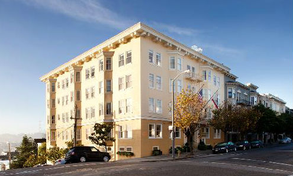
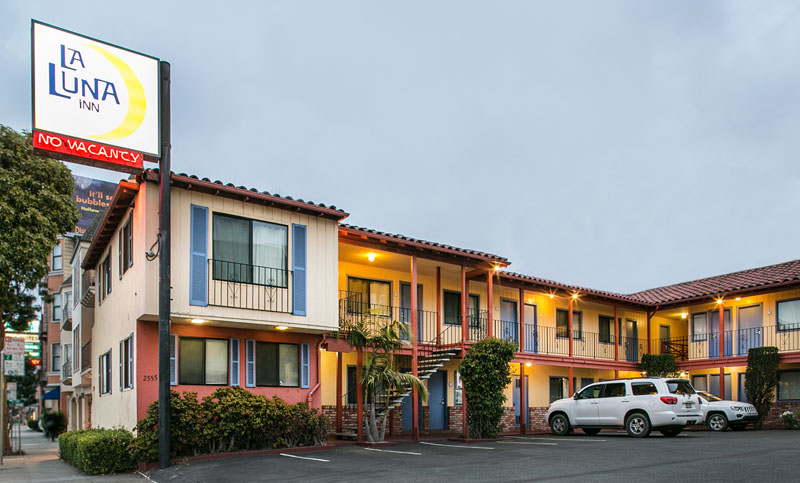

The Internet Archive is located at 300 Funston Avenue in the Richmond District of San Francisco, four miles west of downtown. Our neighborhood, bordered by the Presidio to the north and Golden Gate Park to the south, is a melting pot of cultures with a plethora of eateries, shops, and bookstores. The building itself, formerly a Christian Science church, now houses petabytes of data — including images, texts, music, software and more.
Recommended Accommodations

Hotel Drisco
Located atop San Francisco's chic Pacific Heights neighborhood, Hotel Drisco is known for their elegant rooms and European-style breakfast buffet. Three Star Address: 2901 Pacific Avenue, San Francisco CA Contact: (800) 634-7277 See MapHotel Kabuki
Hotel Kabuki's tranquil Japanese gardens, koi pond, and Japanese-style tubs provide a serene environment in the heart of San Francisco’s vibrant Japantown. Three Star Address: 1625 Post Street, San Francisco CA Contact: (415) 360-3200 See Map
La Luna Inn
This quaint hotel in the Marina District is close to exquisite restaurants, shopping and the beaches at Crissy Field. Two Star Address: 2599 Lombard Street, San Francisco CA Contact: (415) 346-4664 See MapWe also recommend AirBnB, VRBO, and The Red Victorian (mention the Internet Archive when you book for a 15% non-profit discount) as some cost-cutting alternatives, especially if you’re interested in sharing accommodations with other conference attendees.
Transit
Public Transportation
San Francisco is serviced by an extensive network of Muni busses and BART trains. The 511 Trip Planner is a helpful resource to navigate the Bay Area.Parking
Most nearby parking is either metered or two-hour parking, but there are also a few parking lots. See this Parking Map.Location
INTERNET ARCHIVE300 Funston Avenue
San Francisco, CA
email dwebsummit@archive.org